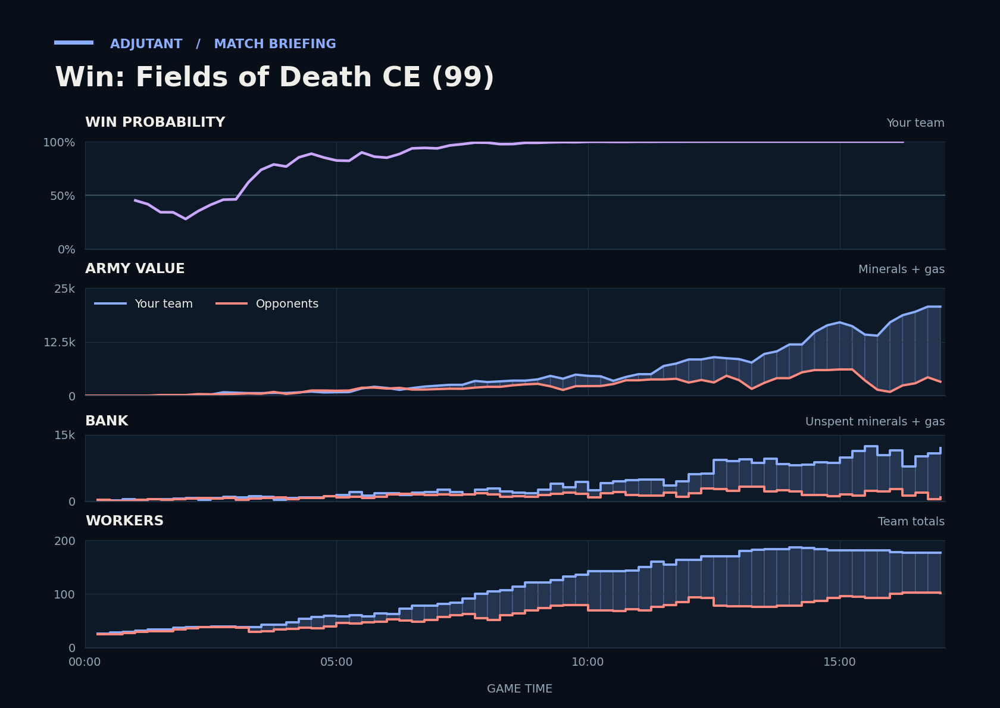

Win: Fields of Death CE (99)
Provisional debrief. The full report (timeline, insights and analysis) is being generated.

**Win.** You won because your army led from 6:30 onward, and by the end it was far larger than the opponents' combined army.
**Why**
- 2:50–3:21: TakeTheTip's Zerglings and Scallop's Reapers killed 11 Idontknow workers, and you led in workers from then on.
- 5:41–6:42: Scallop's Banshees killed 11 Idoknow workers, despite Idoknow's Colossuses killing Scallop's SCVs.
- 16:53–17:05: TakeTheTip's Lurkers and Hydralisks killed about 1,600 of Idoknow's army without losing a unit, and Idoknow and Idontknow each typed gg.